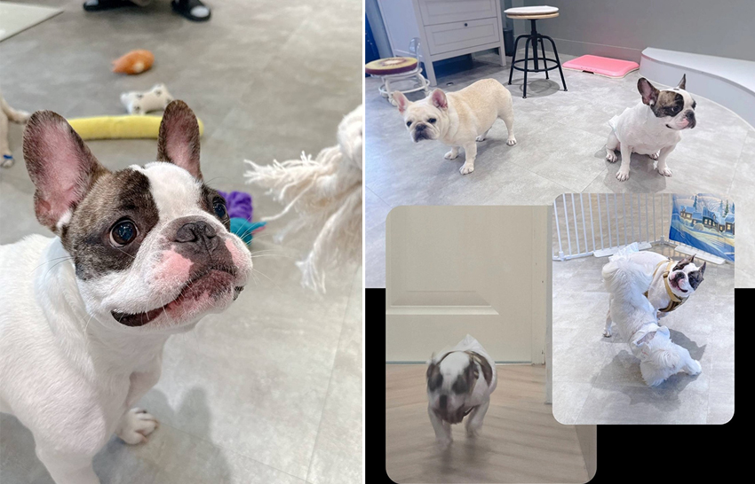
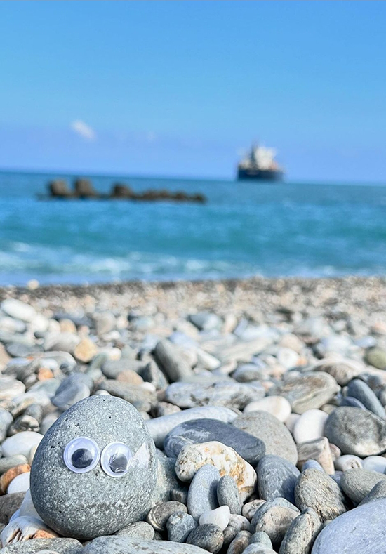

社恐萬人迷——Alpha&一小時（一小石）
楊庚羲│產品九處＼硬體九部
Alpha既矛盾又可愛！那天帶他去寵物安親中心，一進門他就開心到不行，尾巴瘋狂搖擺，直接撲向店員撒嬌，整個黏在人家身上不肯走，還叼著自己的玩具熱情邀請大家陪他玩。其他狗主人看著自己家狗被Alpha的活力吸引，忍不住笑說：「感覺我們的狗變成背景了！」但Alpha完全不管，他的目標只有人類，熱情得像個小社交明星，卻偏偏——沒有狗緣。
|  |
當他發現現場有其他狗狗時，整個形象瞬間崩壞，剛剛還活蹦亂跳的立刻變得超級自閉，默默縮到角落，眼神閃躲，彷彿恨不得找個洞把自己躲起來。其他狗狗試圖湊過來跟他打招呼，他則是低頭當機，一副「拜託別理我，不要過來啊」的樣子，有夠爆笑。
直到我去接他時，Alpha又立刻從「自閉模式」切換到「狂喜模式」，眼睛發亮，屁股瘋狂搖擺，然後直接朝我飛奔過來，興奮到模糊。他的表情彷彿在說：「你終於來接我了！」人類熱情滿滿、對同類社恐到極致的小狗，真的讓人又好笑又心疼！
相比之下，家裡的另一位夥伴「小時」則完全不同。牠沉默又穩重，和Alpha的活力相比，小時的存在充滿了安定與溫暖。牠不會亂叫，也不會四處亂跑，但牠的陪伴，卻能帶來一種無法取代的安心感。每當我感到疲憊，坐下來與小時大眼瞪小眼，牠靜靜地待在我身邊，無聲的支持讓我心裡充滿力量。
|  |
Alpha的熱情與小時的安靜，是兩種截然不同的存在，雖然Alpha總是帶來笑聲與驚喜，小時卻用它那無言的陪伴，溫暖著我的心。這兩隻各具特色的夥伴，讓我的生活充滿了不一樣的色彩。